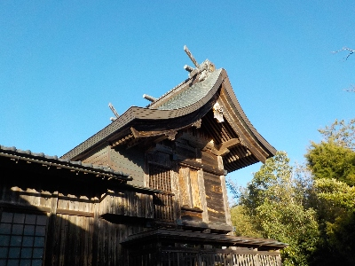
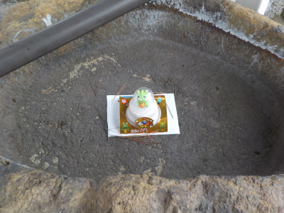
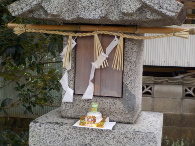
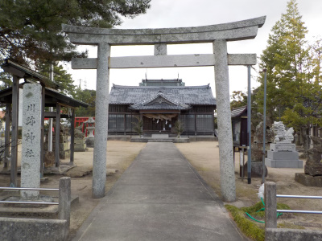
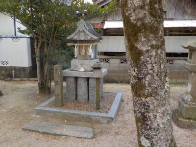
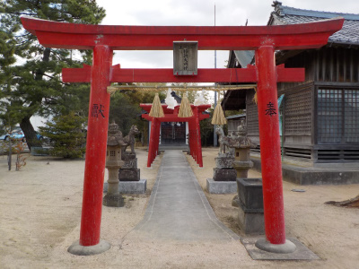
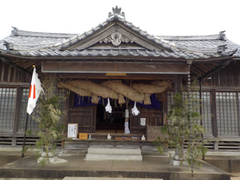

晴天の川跡神社です。
2025/01/01

たまたま参拝した時に晴天で気分が良くなりました。
神社でお願いはしていませんが、良い年になるといいな。
島根県出雲市荻杼町346
2025/01/01

たまたま参拝した時に晴天で気分が良くなりました。
神社でお願いはしていませんが、良い年になるといいな。
2024/01/01

辰年なので龍の鏡餅があちこちに置いてありました。

神社に合わない気もしますが、可愛いのでいいかな。
近ごろ神社に可愛いオブジェを置くところがあるので、そんな流れかもしれないですね。
2023/01/04

誰もいない川跡神社です。人を気にしないでのんびり写真が撮れました。

天満宮があります。合格祈願にどうそ。大学受験、高校受験がもうすぐですね。
こういうの見ると、今年は何か勉強しようかと思ったりします。

稲荷神社もあります。商売繁盛にどうぞ。
隣に駐車場があって行きやすい神社です。
2022/01/01

おみくじは末吉でした。
今年は小さいことにも注意して、よけいなことをしないで、地味に暮らそうと思いました。